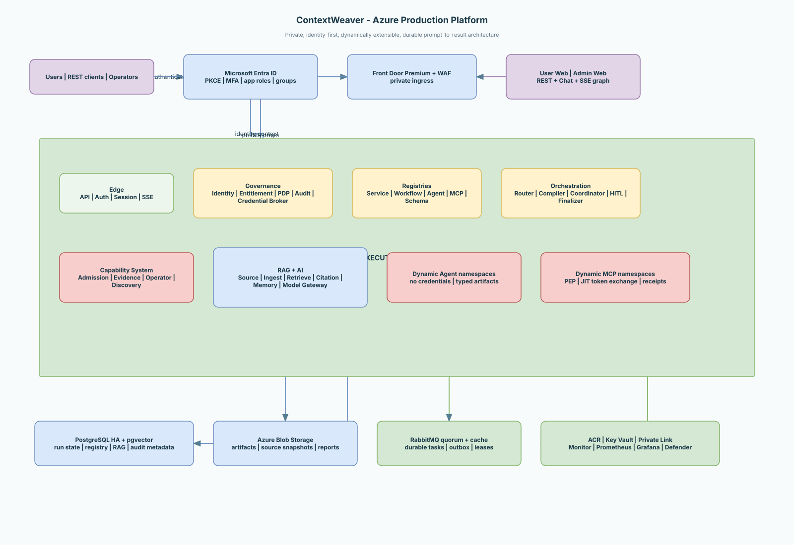
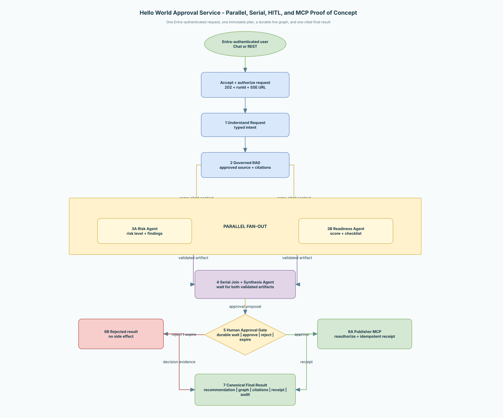

From first prompt to production platform
Start with the simple story, explore each platform capability, then go as deep as you need into Azure deployment, security, RAG, orchestration, contracts, and operations.
Choose the level that matches your goal
Every path leads to the same architecture. The difference is how much implementation detail is shown.
New to ContextWeaver
Understand the product, why it exists, and what an end user experiences.
Beginner · 10 minutesFollow one request
Trace authentication, planning, Agents, MCP tools, HITL, and the final cited result.
Practitioner · 20 minutesDesign the platform
Study the complete private Azure topology and implementation phases.
Architect · DetailedBuild and operate it
Use the infrastructure, delivery, resilience, observability, and source references.
Power user · ReferenceWhat happens after a user enters a prompt?
Chat and REST use the same governed execution plane. A client submits intent; the platform—not the prompt—selects and authorizes the executable graph.
Entra ID and secure session
Typed intent and Service selection
Complete graph preflight
Parallel and serial Agents
Durable HITL when required
Authorized MCP operation
Result, citations and evidence
Explore the platform by capability
Use the search box to find a concept, component, or operational concern.
Azure Production Platform
Complete Entra-to-result architecture and Hello World Approval PoC.
Start hereContinuous Authorization
Whole-graph preflight and runtime authorization for every protected action.
SecurityDynamic Agents and MCPs
Admission, scanning, approval, operator deployment, discovery, and promotion.
PlatformGoverned RAG
Source ownership, ingestion, generations, retrieval plans, and citations.
Data and AIDurable Recovery
How another pod safely resumes accepted work after failures.
ReliabilityCredential Isolation
Why Agents receive references and authority but never credential values.
Zero trustAgent Sandbox
Runtime, filesystem, network, tool, and output-boundary protections.
SecurityAgentic Platform Design
The complete typed graph, artifact, registry, orchestration, and reporting model.
Deep referenceCloud-Neutral Infrastructure
Portable contracts, Terraform, Helm, GitOps, upgrades, rollback, and DR.
InfrastructureObservability Standard
Required metrics, labels, SLOs, alerts, privacy, and dashboard contracts.
OperationsSource and State Structure
Repository ownership, service layout, state boundaries, and build order.
Power userImplementation Readiness
Transparent separation between implemented foundations and remaining work.
StatusEleven diagrams, one visual language
Use the interactive viewer to switch pages, zoom, enter fullscreen, or download the editable Draw.io source.

Azure production topology
Entra ID, private edge, AKS control and execution planes, RAG, dynamic capabilities, durable state, and security services.

Hello World Approval PoC
Parallel Risk and Readiness Agents, serial synthesis, durable HITL, Publisher MCP, and canonical final result.
Complete architecture references
Architecture whitepaper
Spec-driven governance, composition, transactions, RAG, KPIs, dashboards, and delivery.
RAG storage readiness
Implemented pgvector foundation, scale boundaries, and Azure production requirements.
Complete diagram viewer
All architecture pages with zoom, fullscreen, and editable Draw.io source.